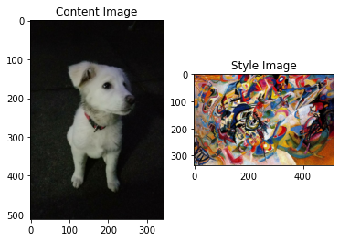
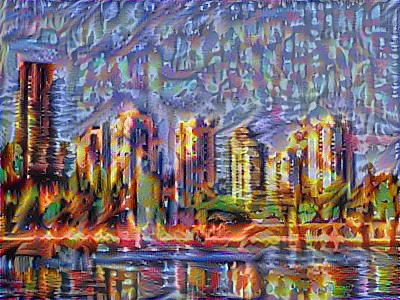
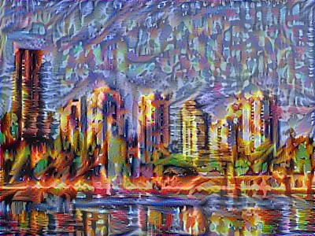
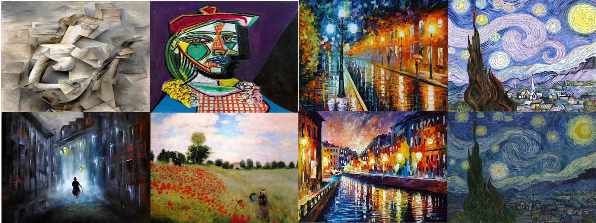
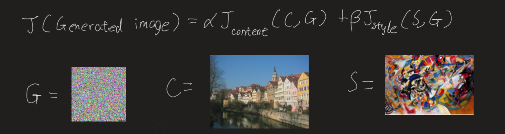
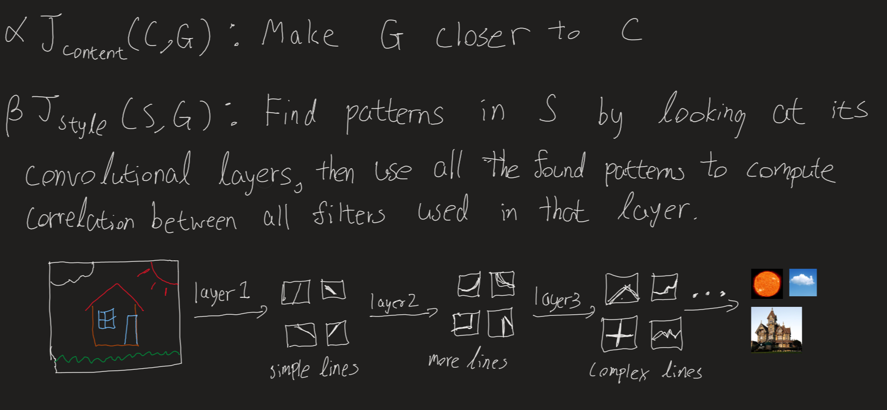
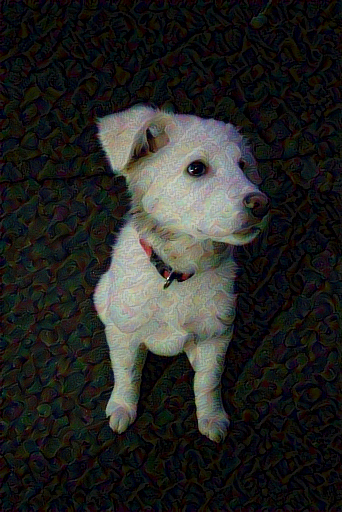
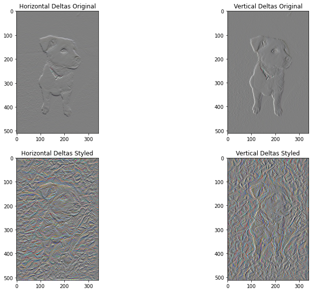
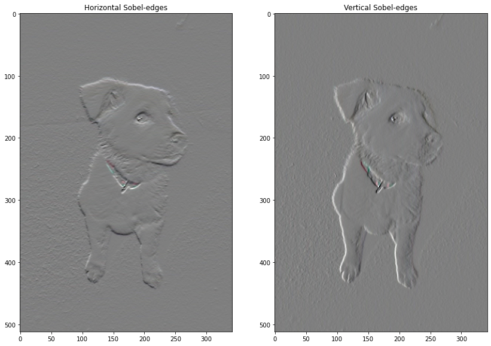
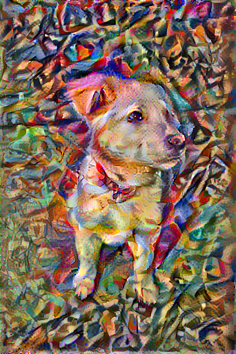

Deep Art Gallery 🧠
Neural Style Transfer, ConvNet(VGG19), Transfer Learning, tf-gpu
.jpg)
.jpg)

.jpg) 

.jpg)
.jpg)
.jpg)
.jpg)
.jpg)
Styles used
 I think you can guess which styles were used on which photos. Except Newbie’s style is by Wassily Kandinsky — Composition VII
How it works
Neural Style Transfer works by choosing a content image and a style image and then ‘drawing’ the content image using style of the style image.
In implementation, all we are doing is calculating some derivatives to make a number small as possible.
This is the cost function we are trying to minimize. As \(J(GeneratedImage)\) gets smaller, we get the art we want. Think of cost function as distance from our art being beautiful. G is initialized as a random noise image. We will use Adam optimization to compute the gradient. Think of gradient as small step towards prettiness.

So every iteration, G will be subtracted with gradient of \(J(GeneratedImage)\) slowly becoming beautiful.

Content Cost Function \(J_{content}(C,G)\)
\[J_{content}(C,G) = \frac{1}{4 \times n_H \times n_W \times n_C}\sum _{ \text{all entries}} (a^{(C)} - a^{(G)})^2\tag{1} \]
- Here, \(a\) stands for activation of the lth layer in our convNet.
- \(n_H\), \(n_W\), \(n_C\) is the dimension of the layer. (Height, width, depth).
- The constants in front are just for normalization.
Style Cost Function \(J_{style}(S,G)\)
\[J_{style}^{[l]}(S,G) = \frac{1}{4 \times {n_C}^2 \times (n_H \times n_W)^2} \sum _{i=1}^{n_C}\sum_{j=1}^{n_C}(G^{(S)}_{(gram)i,j} - G^{(G)}_{(gram)i,j})^2\tag{2} \]
- The constants in front are just for normalization
- The gram is a function that just calculates the correlation between horizontal vectors in the given matrix(which is our depths)
- We will calculate gram of activation layer from both content and generated layer for all combinations of depths(i,j).
- And this is just one layer. Then we compute for all layers. This is why it takes so long to generate our image.
- Note that the picture below ‘unrolled’ a 3d volume into 2d matrix.

- As you can see style cost function is less straightforward. “If you don’t understand it, don’t worry about it” - Andrew NG.
Code
Cred to Tensorflow (see reference) Note that most of the arts generated above were using code from a coursera assignment which is different from codes below showing implementation (same but different transferred model) in tensorflow2. Modified to run on gpu.
Transfer Learning
Choice for the model is VGG19 since it is what was used in the original paper by Leon A. Gatys, Alexander S. Ecker, Matthias Bethge.
Helper functions
Training

Do 1000 iteration and save every 200th iteration image

Train step: 1000
Total time: 634.3Total Variation Loss
I didn’t learn this part so its like magic to me


array([114173.52], dtype=float32)
Train step: 1000
Total time: 834.3References:
The Neural Style Transfer algorithm was due to Gatys et al. (2015). The pre-trained network used in this implementation is a VGG network, which is due to Simonyan and Zisserman (2015). The whole code is basically from tensorflow website listed below with little changes(to save images and use gpu)
- Leon A. Gatys, Alexander S. Ecker, Matthias Bethge, (2015). A Neural Algorithm of Artistic Style
- Harish Narayanan, Convolutional neural networks for artistic style transfer.
- DeepLearningAi(Coursera) (2020). Deep Learning Specialization
- TensorFlow (2019). Neural style transfer